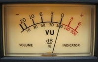
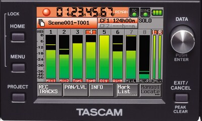
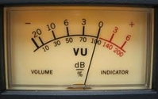
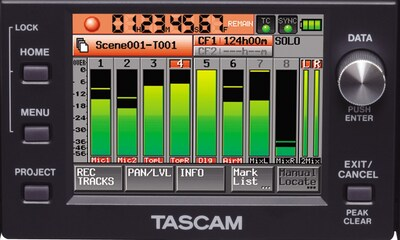
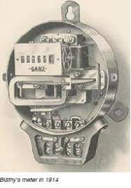
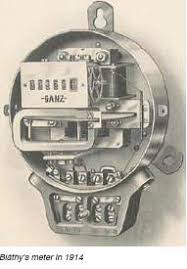
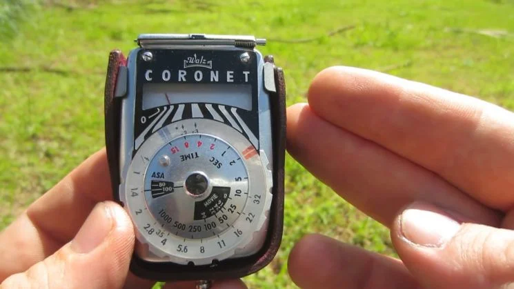
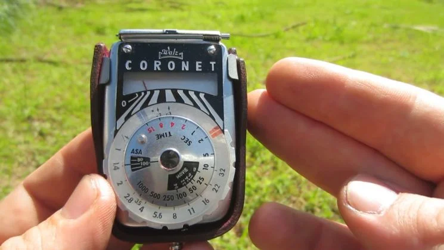

The Meter
The fundamental unit of length in the SI system
Introduction
The meter is the SI (International System of Units) base unit of length. It is widely used across the world in scientific, engineering, and everyday applications to measure the size of objects, distances between places, and more. The meter has evolved significantly over time, and its definition has changed to become increasingly precise as our measurement technologies have advanced.
.jpeg) 



History of the Meter
The concept of the meter dates back to ancient times, with early civilizations using various units to measure distance. However, the modern meter has an interesting history:
- 1791 (France): The meter was initially defined by the French Revolution as one ten-millionth of the distance from the Earth's equator to the North Pole.
- 1889: The meter was redefined in terms of a physical standard, a platinum-iridium bar, known as the "International Prototype of the Meter," kept at the International Bureau of Weights and Measures.
- 1960: The meter was redefined in terms of the wavelength of light emitted by the isotope krypton-86.
- 1983 (Current Definition): The meter is now defined as the distance light travels in a vacuum in 1/299,792,458 of a second, based on the speed of light being constant.
.jpeg) 

How is the Meter Used?
The meter is used in a wide range of applications across various fields:
- Science and Research: The meter is used to measure physical properties like distance, size, and displacement in scientific experiments.
- Construction: In construction, meters are used to measure the dimensions of buildings, roads, and other infrastructure.
- Everyday Use: People use meters to measure the length of objects, such as furniture, cloth, or room dimensions in day-to-day life.
- Technology and Engineering: Engineers use meters to design machinery, electronics, and components that require precise measurement of lengths and distances.
The Meter in Relation to Other Units
The meter forms the foundation for many other derived units in the SI system. It can be combined with other SI units to measure quantities like velocity, area, and volume. Some key relations include:
- Velocity: Meters per second (m/s) measures the speed of an object.
- Area: Square meters (m²) are used to measure the area of surfaces.
- Volume: Cubic meters (m³) are used to measure the volume of three-dimensional objects.
Modern Use of the Meter
Today, the meter is used worldwide, and its precise definition allows for highly accurate measurements in fields ranging from astronomy to biotechnology. The relationship between the meter and the speed of light ensures that it remains one of the most stable and reproducible units of measurement in existence.
.jpeg) 

.jpeg)